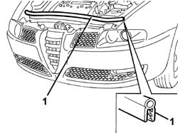

7025A62 BONNET LID ANTI-WIND NOISE SEAL - R+R
- Path
- Procedures > 70 FITTINGS > 7025 COMPARTMENT LIDS > 7025A LOCATION OF BONNET WIND NOISE > 7025A62 BONNET LID ANTI-WIND NOISE SEAL - R+R
- Kind
- repair procedure (removal / refitting; the operation number is the code)
- Applies to
- all engines; all production periods
- Interactive page
- https://sloeber94.github.io/elrnDB-aGt/en/#/125001830
Applies to: all engines; all production periods
 Removing
Removing
 Refitting
RefittingLift the bonnet lid.
1. Remove the seal.

Applies to: all engines; all production periods
Refitting
RemovingCheck that the weatherstrip is intact and not damaged.
Fit the weather strip.